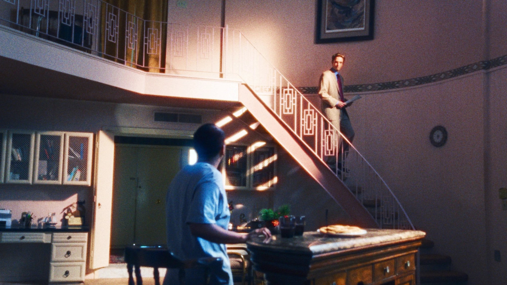
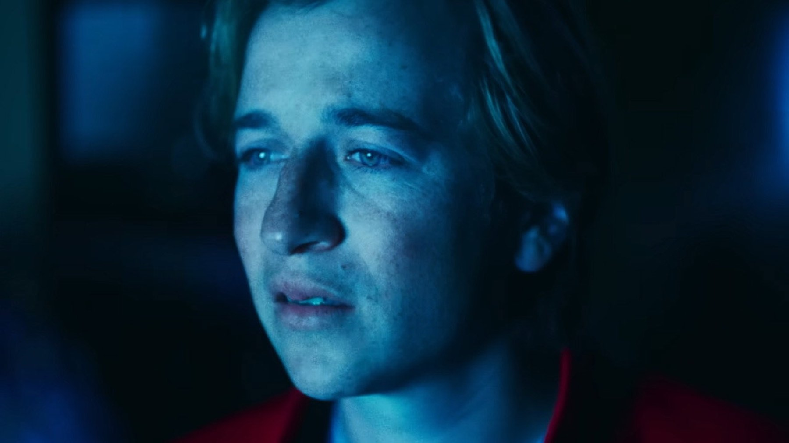

Primetime: quando esce, trama, cast e cosa sappiamo
Dal 15 ottobre in sala il film con Robert Pattinson sul programma To Catch a Predator: da Venezia a una storia vera che ha diviso l'America
Nel 2006 un programma televisivo americano riempiva la prima serata mostrando uomini che entravano in una casa convinti di incontrare una ragazzina o un ragazzino, e trovavano un giornalista con le telecamere. Il 15 ottobre 2026 quella storia arriva nelle sale italiane con Primetime, distribuito da I Wonder Pictures: diretto da Lance Oppenheim, ha come protagonista Robert Pattinson nel ruolo del conduttore Chris Hansen.
La trama: un format di successo e il prezzo dell'audience
Il film parte dal 2006, l'anno in cui il giornalista Chris Hansen e il suo To Catch a Predator diventano un fenomeno televisivo nazionale, e si chiede dove finisca l'informazione e dove cominci lo spettacolo, stando alla scheda TMDB. MYmovies aggiunge che, con lo spostamento del programma in prima serata, Hansen si trova sotto pressione per trovare casi sempre più clamorosi e vincere la guerra degli ascolti.
Wikipedia precisa che il racconto segue le operazioni condotte insieme a Perverted-Justice, il gruppo di volontari che si fingeva online minorenne per attirare gli adulti, e che al centro c'è un'operazione in Texas finita in tragedia: quella che coinvolse il vice procuratore Bill Conradt. È un tema delicato, perché riguarda una persona reale che morì: i fatti sono documentati e la sinossi di Wikipedia lo indica come uno dei nodi della storia.
Non ci sono ancora le recensioni italiane e non abbiamo visto il film: qui trovi quindi il contesto, non un giudizio. Quando sarà uscito scriveremo la nostra recensione.
Il cast: Pattinson e un ensemble di caratteristi
Robert Pattinson interpreta Chris Hansen. Merritt Wever è Andie Bender, Skyler Gisondo è Dan Plum, Phoebe Bridgers è Del e Bokeem Woodbine è Cortland Gunn. Alex Winter, che il pubblico ricorda per Bill & Ted, è Bill Conradt, secondo la scheda TMDB. Nel cast ci sono anche Matthew Maher e Anna Faris, stando a MYmovies.
Pattinson è di nuovo al centro di un film d'autore dopo Mickey 17, di cui trovi la nostra recensione sul sito: stavolta lo ritroviamo in un racconto di cronaca invece che di fantascienza. Primetime è inoltre un film A24, la casa di produzione e distribuzione americana alla quale abbiamo dedicato anche la recensione di Backrooms.
La storia vera: da Dateline a un film in concorso a Venezia
To Catch a Predator è andato in onda dal novembre 2004 al dicembre 2007, nato come segmento di Dateline NBC, e il suo conduttore era proprio Chris Hansen, secondo Wikipedia. Il programma funzionava così: Perverted-Justice faceva da esca online, gli adulti si presentavano in una casa allestita per l'occasione e Hansen li affrontava davanti alle telecamere. Fin dall'inizio non sono mancate le critiche: Wikipedia ricorda le accuse di induzione al reato, le imputazioni cadute in diverse giurisdizioni e i dubbi etici sul confine tra giornalismo e polizia.
Il caso Conradt è il punto più drammatico: il 5 novembre 2006, quando la polizia e la troupe di NBC si presentarono alla sua abitazione per eseguire un mandato di perquisizione, l'uomo si tolse la vita. La sua famiglia citò in giudizio NBC chiedendo 105 milioni di dollari e la causa si chiuse fuori dal tribunale con un accordo di cifra non resa nota, sempre secondo Wikipedia.
Il film nasce da quell'inchiesta giornalistica: la sceneggiatura è di Ajon Singh e si basa su un articolo di Luke Dittrich uscito su Esquire nel 2007, e Oppenheim firma la regia. Le riprese si sono svolte tra febbraio e marzo 2025 a New Orleans, a New York e in Sri Lanka, con un budget di 14,5 milioni di dollari.

Dal Lido alle sale: come è stato accolto
Primetime è stato presentato il 5 settembre 2026 alla 83ª Mostra del Cinema di Venezia ed è uscito negli Stati Uniti il 25 settembre con A24, secondo Wikipedia. Sempre secondo Wikipedia, a ottobre 2026 il film ha l'86% di recensioni positive su Rotten Tomatoes, con una particolare attenzione per la prova di Pattinson, e nel primo weekend americano ha incassato 19,2 milioni di dollari, il terzo miglior esordio per A24.
Il vero Chris Hansen non ha gradito: Wikipedia riporta che ha giudicato il film lontano dalla realtà, che si è rifiutato di firmare l'accordo di riservatezza proposto dallo studio e che ha acquistato spazi pubblicitari per rispondere durante le proiezioni. Non abbiamo ancora trovato recensioni firmate che possiamo citare con testata e autore, e preferiamo non anticiparle.
A chi potrebbe piacere
A chi ama i film tratti da fatti di cronaca e le storie sul potere della televisione, e a chi vuole vedere Pattinson alle prese con un personaggio pubblico reale. Potrebbe interessare anche chi ha seguito il programma originale e si chiede come venga raccontato oggi. Se sei sensibile ai temi della violenza sui minori o del suicidio, tieni conto che il film ruota attorno a entrambi.
Una cosa è certa: la storia di To Catch a Predator ha lasciato dubbi che non si sono mai chiusi, e il cinema sceglie di riaprirli. Il 15 ottobre capiremo come.
Domande frequenti
Quando esce Primetime in Italia?
Il 15 ottobre 2026 nei cinema, con I Wonder Pictures, secondo MYmovies. Il film è stato presentato alla Mostra di Venezia il 5 settembre 2026 ed è uscito negli Stati Uniti il 25 settembre con A24, secondo Wikipedia.
Dove si vedrà Primetime?
Prima di tutto in sala. Per streaming o noleggio in Italia non c'è ancora una data comunicata: la aggiungeremo quando arriverà.
Chi c'è nel cast di Primetime?
Robert Pattinson è il giornalista Chris Hansen. Con lui Merritt Wever (Andie Bender), Skyler Gisondo (Dan Plum), Phoebe Bridgers (Del), Bokeem Woodbine (Cortland Gunn) e Alex Winter nel ruolo di Bill Conradt.
Primetime è una storia vera?
Sì. Il film è ispirato a To Catch a Predator, programma andato in onda su Dateline NBC dal 2004 al 2007, e a un articolo di Luke Dittrich pubblicato da Esquire nel 2007.